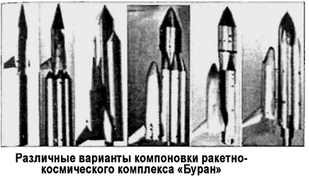
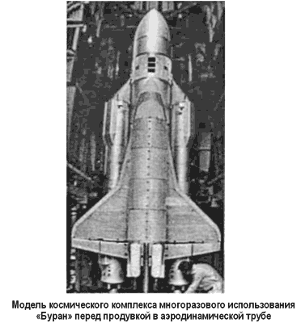
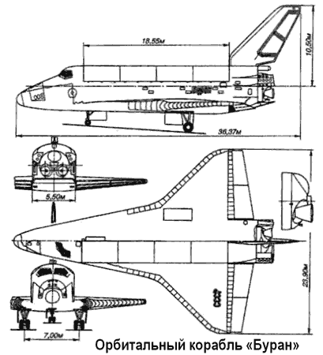
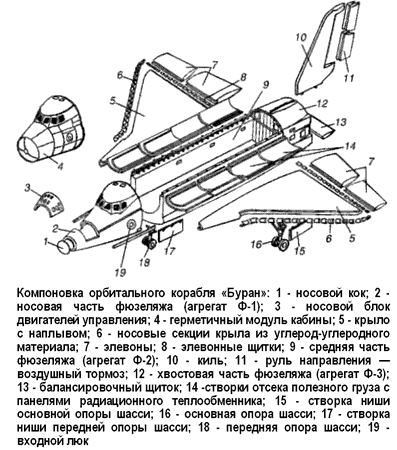
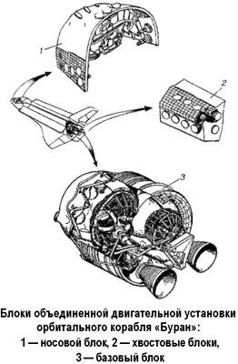

Проект «Буран»
В конце 1975 года проектанты окончательно определились с конфигурацией будущего транспортного корабля — он должен был стать крылатым. Появились первые чертежи орбитального самолета, названного «Бураном».
Это направление работ было поручено главному конструктору Игорю Николаевичу Садовскому. Заместителем главного конструктора по орбитальному кораблю назначили Павла Цыбин.
Ракета представлялась конструкторам как самостоятельная структура, а полезным грузом мог стать орбитальный корабль или любой другой космический аппарат. В отличие от американской, советская ракета должна была осуществлять запуск космических аппаратов самых различных классов.
К универсальности комплекса подтолкнул один эпизод.
Первоначально предлагалось размещение двигательной установки второй ступени на орбитальном корабле, как у «Спейс Шаттла». Однако из-за отсутствия в то время самолета для транспортировки с завода-изготовителя до Байконура, а главное, для отработки в летных условиях космического аппарата значительной массы, орбитальный корабль был облегчен за счет переноса двигателей на центральный бак. С переносом двигателей на центральный бак ракеты их количество увеличилось с трех до четырех.
В 1976 году облик «Бурана» приблизился к «Спейс Шаттлу», увеличилась стартовая масса комплекса, диаметр центрального блока.
Бригада проектантов, подчиненная Садовскому, вела проектные работы как по ракете, так и по орбитальному кораблю и комплексу в целом. Начиная с 1976 года, в течение пяти лет были проработаны пять вариантов конструкторских схем на базе исходной. Орбитальный корабль приобретал формы, близкие к конечным. Ракета меняла свою структуру от двухбакового центрального блока до четырехбакового, а затем вновь двухбакового, менялись размерность и количество маршевых двигателей, оптимизировалось соотношение ступеней и тяга двигателей, облагораживались аэродинамические формы. В конструкцию орбитального корабля были введены воздушно-реактивные двигатели, что давало возможность осуществлять глубокое маневрирование при посадке.
Одновременно разрабатывалась конструкторская документация, велась подготовка производства, разрабатывался проект по приспособлению стартовых площадок «Н-1» и нового стенда-старта. 17 февраля 1976 года вышло постановление ЦК КПСС и Совета Министров СССР № 132-51 о разработке советской многоразовой космической системы «Рубин», включавшей орбитальный самолет, ракету-носитель, стартовый комплекс, посадочный комплекс, специальный комплекс наземного обслуживания, командно-измерительный комплекс, поисковоспасательный комплекс. Система должна была обеспечивать «выведение на северо-восточные орбиты высотой 200 километров полезных грузов весом до 30 тонн и возвращение с орбиты грузов до 20 тонн».

В постановлении, в частности, предлагалось организовать в Министерстве авиационной промышленности Научнопроизводственное объединение «Молния» во главе с авиаконструктором Глебом Лозино-Лозинским (он нам известен как создатель космоплана «Спираль»), которое должно было разработать орбитальную ступень самолетной схемы, подготовив полный комплект документации для ее изготовления.
Само изготовление и сборка планера, создание наземных средств его подготовки и испытаний, а также воздушная транспортировка планера, корабля и ракетных блоков были поручены Тушинскому машиностроительному заводу Головная роль в разработке ракеты-носителя и системы в целом оставалась за НПО «Энергия». Заказчиком выступало Министерство обороны.
Окончательный проект системы был утвержден Валентином Глушко 12 декабря 1976 года. Согласно проекту летные испытания планировалось начать во втором квартале 1979 года.

При создании «Бурана» были объединены усилия сотен конструкторских бюро, заводов, научно-исследовательских организаций, военных строителей, эксплуатационных частей космических сил. Всего в разработке участвовало 1206 предприятий и организаций, почти 100 министерств и ведомств, были задействованы крупнейшие научные и производственные центры России, Украины, Белоруссии и других республик СССР.
В конечном виде многоразовый орбитальный корабль «Буран» (11Ф35) представлял собой принципиально новый для советской космонавтики летательный аппарат, объединяющий в себе весь накопленный опыт ракетно-космической и авиационной техники.

По аэродинамической схеме корабль «Буран» — моноплан с низкорасположенным крылом, выполненный по схеме «бесхвостка». Корпус корабля выполнен негерметичным, в носовой части находится герметичная кабина общим объемом более 70 м3, в которой располагается экипаж и основная часть аппаратуры.
С внешней стороны корпуса наносится специальное теплозащитное покрытие. Покрытие используется двух типов в зависимости от места установки: в виде плиток на основе супертонкого кварцевого волокна и гибких элементов высокотемпературных органических волокон. Для наиболее теплонапряженных участков корпуса, таких как кромки крыла и носовой кок, используется конструкционный материал на основе углерода. Всего на наружную поверхность «Бурана» нанесено свыше 39 тысяч плиток.

Габариты «Бурана»: полная длина — 35,4 метра, высота — 16,5 метра (при выпущенном шасси), размах крыла — около 24 метров, площадь крыла — 250 м2, ширина фюзеляжа — 5,6 метра, высота — 6,2 метра, диаметр грузового отсека — 4,6 метра, его длина — 18 метров, стартовая мас са — до 105 тонн, масса груза, доставляемого на орбиту, — до 30 тонн, возвращаемого с орбиты — до 15 тонн, максимальный запас топлива — до 14 тонн. «Буран» рассчитан на 100 рейсов и может выполнять полеты как в пилотируемом, так и в беспилотном (автоматическом) варианте. Максимальное количество членов экипажа — 10 человек, при этом основной экипаж — 4 человека и до 6 человек — космонавты-исследователи. Диапазон высот рабочих орбит 200-1000 километров при наклонениях от 51 до 110. Расчетная продолжительность полета 7-30 суток.
Обладая высоким аэродинамическим качеством, корабль может совершать боковой маневр в атмосфере до 2000 километров.
Система управления «Бураном» основана на бортовом многомашинном комплексе и гиростабилизированных платформах.
Она осуществляет как управление движением на всех участках полета, так и управление работой бортовых систем.
Одной из основных проблем при ее проектировании была проблема создания и отработки математического обеспечения.
Автономная система управления совместно с радиотехнической системой «Вымпел» разработки Всесоюзного научно-исследовательского института радиоаппаратуры, предназначенной для высокоточных измерений на борту навигационных параметров, обеспечивает спуск и автоматическую посадку, включая пробег по полосе до останова. Система контроля и диагностики, примененная здесь впервые на космических аппаратах как централизованная иерархическая система, построена на встроенных в системы средствах и на реализации алгоритмов контроля и диагностики в бортовом вычислительном комплексе.
Радиотехнический комплекс связи и управления поддерживает связь орбитального корабля с ЦУП. Для обеспечения связи через спутники-ретрансляторы разработаны специальные фазированные антенные решетки, с помощью которых осуществляется связь при любой ориентации корабля. Система отображения информации и органов ручного управления обеспечивает экипаж информацией о работе систем и корабля в целом и содержит органы ручного управления в орбитальном полете и при посадке.

Система электропитания корабля, созданная в НПО «Энергия», построена на базе электрохимических генераторов с водородно-кислородными топливными элементами разработки Уральского электрохимического комбината. Мощность системы электропитания — до 30 кВт. При ее создании пришлось разработать принципиально новый для СССР источник электроэнергии — электрохимический генератор на основе топливных элементов с матричным электролитом, обеспечивающий непосредственное преобразование химической энергии водорода и кислорода в электроэнергию и воду, и разработать впервые в мире систему космического криогенного докритического (двухфазного) хранения водорода и кислорода без потерь.
Объединенная двигательная установка (ОДУ) «Бурана» состоит из двух жидкостных ракетных двигателей орбитального маневрирования тягой 8800 килограммов (5000 включений за полет), 38 управляющих двигателей с тягой по 400 килограммов (2000 включений за полет), 8 двигателей точной ориентации тягой по 20 килограммов (5000 включений за полет), 4 твердотопливных двигателей экстренного отделения с тягой по 2800 килограммов, 1 кислородного бака и 1 бака горючего со средствами заправки, термостатирования, наддува, забора жидкости в невесомости.
Двигатели ОДУ размещаются на орбитальном корабле с учетом решаемых ими задач. Так, двигатели управления, расположенные в носовой и хвостовой частях фюзеляжа, обеспечивают координатные перемещения корабля по всем осям и управление его положением в пространстве.
В штатном (безаварийном) полете двигатели ОДУ обеспечивают стабилизацию орбитального корабля в связке с ракетой-носителем, разделение корабля и ракеты-носителя, довыведение корабля на рабочую орбиту (двумя импульсами), стабилизацию и ориентацию, орбитальное маневрирование, сближение и стыковку с другими космическими аппаратами, торможение, сход с орбиты и управление спуском.
В нештатных ситуациях (то есть при авариях на активном участке) двигатели ОДУ используются в первую очередь для ускоренной выработки топлива перед отделением от ракеты-носителя с целью восстановления необходимой центровки орбитального корабля.
В случае экстренного отделения предусматривается срабатывание специальных пороховых двигателей ОДУ.